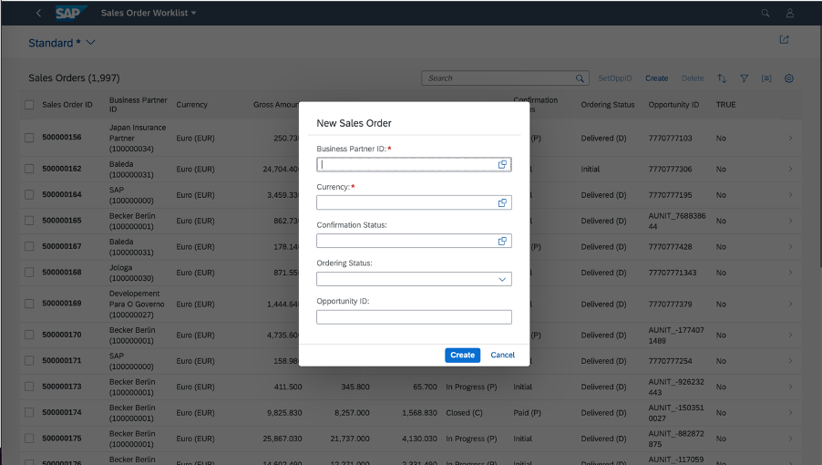

You can enable this feature in the list report or worklist applications. To do this, configure the manifest.json file by adding the property
createWithParameterDialog and passing the properties of the related entity set, as shown in the following sample code:
manifest.json
"createWithParameterDialog" : {
"fields" : {
"<fieldName>" : {"path":"<fieldname>"},
"<fieldName>" : {"path":"<fieldname>"}
}
The option to create objects using a dialog now appears in the list report application.
"sap.ui.generic.app": {
"_version": "1.3.0",
"pages": {
"ListReport|STTA_C_SO_SalesOrder_ND": {
"entitySet": "STTA_C_SO_SalesOrder_ND",
"component": {
"name": "sap.suite.ui.generic.template.ListReport",
"list": true,
"settings": {
"multiSelect": true,
"isWorklist": true,
"tableSettings": {
"createWithParameterDialog" : {
"fields" : {
"BusinessPartnerID":{"path": "BusinessPartnerID"},
"CurrencyCode" : {"path":"CurrencyCode"},
"BillingStatus" : {"path":"BillingStatus"},
"DeliveryStatus" : {"path":"DeliveryStatus"},
"OpportunityID" : {"path":"OpportunityID"}
}
}
}
}
},
"pages": {
..............
..............
}
}
}
}Enabling createWithParameterDialog in list reports or worklists in multi-view mode in the
manifest.json
file
"sap.ui.generic.app": {
"pages": [{
"entitySet": "C_STTA_SalesOrder_WD_20",
"component": {
"name": "sap.suite.ui.generic.template.ListReport",
"list": true,
"settings": {
"quickVariantSelectionX": {
"showCounts": true,
"variants": {
"0":
{
"key": "_tab1",
"annotationPath": "com.sap.vocabularies.UI.v1.SelectionVariant#Expensive"
},
"1":
{
"key": "_tab2",
"annotationPath": "com.sap.vocabularies.UI.v1.SelectionPresentationVariant#Cheap",
"tableSettings": {
"createWithParameterDialog": {
"fields": {
"bp_id":
{
"path": "bp_id"
},
"currency_code":
{
"path": "currency_code"
},
"op_id":
{
"path": "op_id"
}
}
}
}
}
}
}
}
},If this feature is enabled, you cannot navigate to an object page in create mode. However, you can navigate to the object page in display mode to modify objects.
The draft state is not maintained when an object is created using the dialog.
Make sure that the properties are related to the entities.
Make sure that all the mandatory fields of the entities are part of the create dialog.
Only list report pages support object creation using the dialog. On list report pages, this feature is available in both single view and multiple views scenarios. For more information, see Defining Multiple Views on a List Report Table - Single Table Mode and Defining Multiple Views on a List Report Table - Multiple Table Mode.
You can also create objects using a dialog by prefilling fields from the filter values that you entered. For more information, see Prefilling Fields When Creating a New Entity Using an Extension Point.
When you click on Create while creating an object, the message displayed in the popup is the same as the transient message if it is received from the back end.
The default title of the dialog is New Object,
and the key in the i18n file is
CREATE_DIALOG_TITLE. You can change this by redefining the key in the application or in the
Adaptation Editor. The default values of the buttons on the dialog are
Create and Cancel. You can also change them in the
Adaptation Editor.
You can enable this feature for the list report by
configuring
the creationMode property in the manifest.json file,
as
shown in the
following sample code:
manifest.json
"targets": {
"ProductsList": {
"type": "Component",
"name": "sap.fe.templates.ListReport",
"id": "ProductsList",
"options": {
"settings": {
"entitySet": "Products",
"controlConfiguration": {
"@com.sap.vocabularies.UI.v1.LineItem": {
"tableSettings": {
"creationMode": {
"name": "CreationDialog",
"creationFields": "com.sap.vocabularies.UI.v1.FieldGroup#CreationParameters"
}
}
}
},
...
}
}
},The CreationFields parameter can point to a FieldGroup annotation or a comma-separated list of properties. Immutable properties are
added to the CreationFields list automatically.
For the list report in multi-view mode, provide the creation mode parameters in the TableSettings configuration for each line item configured in a
view.
If this feature is enabled, you cannot navigate to an object page in create mode. However, you can navigate to the object page in display mode to modify objects.
The draft state is not maintained when an object is created using the dialog.
All properties must be related to entities.
Mandatory parameters are marked with a red asterisk in the dialog.
For information about enabling a custom create dialog on a tree table, see the Create Mode and Custom Create Mode with a Menu Button section in Tree Tables.
If you have entered filter values to prefill fields with specific values, the user can also use a dialog to create objects. For more information, see Prefilling Fields When Creating a New Entity.
The default title of the dialog is New Object. Use the C_TRANSACTION_HELPER_SAPFE_ACTION_CREATE key in the
i18n file to modify it.